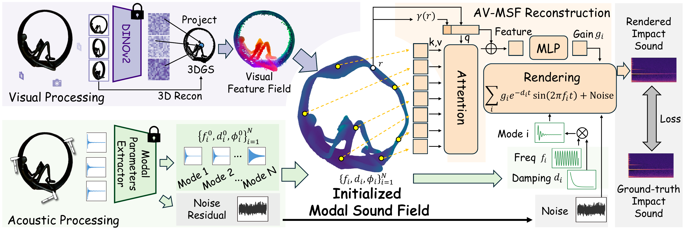
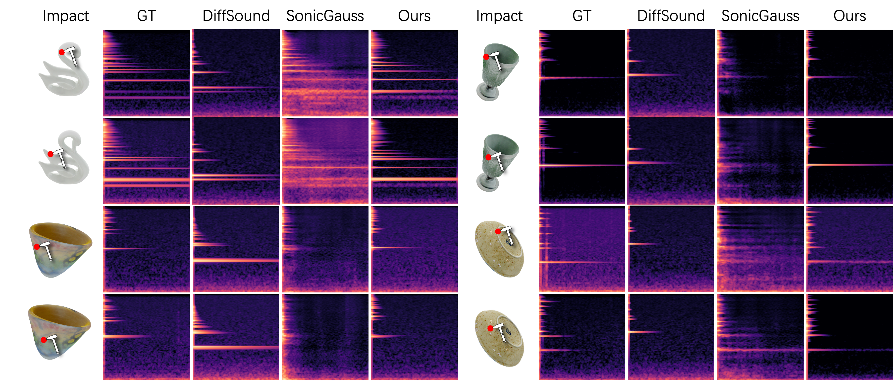
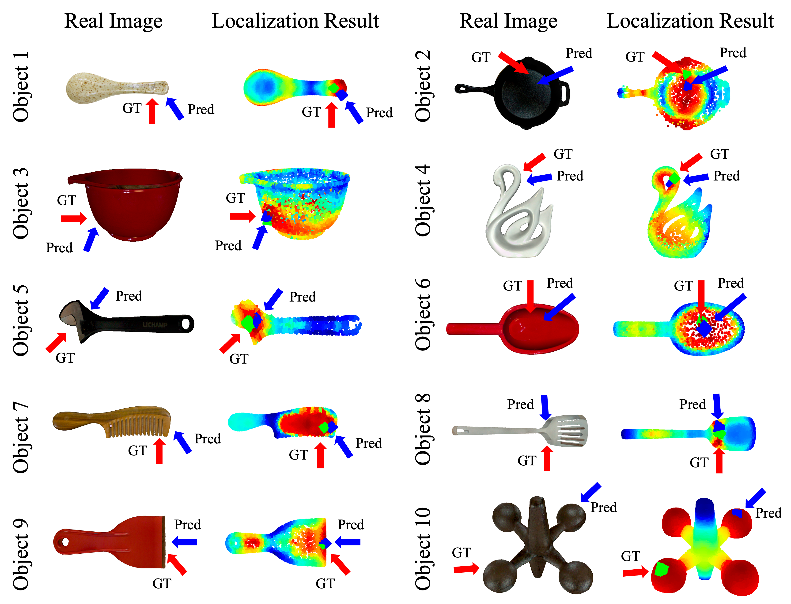
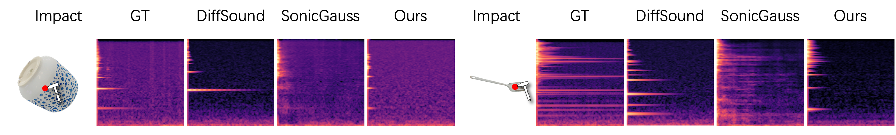
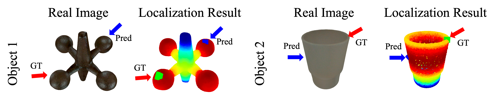

Audio-Visual Modal Sound Field (AV-MSF) is a physically-grounded object-level acoustic representation,
reconstructed from multi-view images and few-shot impact recordings.
It leverages the insight that visually similar object regions exhibit similar
vibration patterns. AV-MSF enables diverse applications, including
novel-position impact sound synthesis, contact localization, and object sound
editing.
Abstract
While modern 3D reconstruction excels at modeling object geometry and appearance,
it largely ignores the rich acoustic cues revealed through physical interaction.
Object impact sounds convey material, stiffness, and structural properties that
complement vision, yet existing impact sound modeling approaches either rely on
expensive physics-based simulation or require large datasets to generalize in a
purely data-driven manner. We introduce Audio-Visual Modal Sound Field (AV-MSF), a
novel object-level acoustic representation reconstructed from multi-view images and
only a few impact sound recordings. AV-MSF builds on 3D Gaussian Splatting
integrated with dense 3D visual feature to provide a strong geometry-aware prior,
and represents the impact sound field using compact, physically meaningful modal
parameters, enabling robust few-shot reconstruction. Experiments on two real-world
datasets show that AV-MSF achieves state-of-the-art impact sound rendering,
outperforming both physics-based and data-driven baselines. Furthermore, we
demonstrate downstream applications enabled by our representation, including
contact localization and object sound editing.
Interactive Demo
Drag to rotate · Click to impact
Impact recordings
Green diamond: GT
Blue diamond: Pred
Heatmap: redder means higher probability; bluer means lower.
Sound Editing
→
All objects are trained using only 20% of the available impact recordings (~6 shots).
Method Overview
Given multi-view image observations and few-shot impact recordings, our framework
reconstructs an audio-visual modal sound field.

Visual Processing. We extract dense features with a pre-trained
vision encoder and lift them into a 3D Gaussian Splatting (3DGS) representation
to form a geometry-aware visual feature field.
Acoustic Processing. We extract modal parameters from a few
reference recordings to initialize optimization, and model unmodeled
environmental noise with a residual component.
AV-MSF Reconstruction. We jointly optimize global modal
frequencies and dampings, residual noise, and an implicit spatially varying
neural gain field, guided by the visual feature field.
Impact Sound Rendering
Comparison of rendered impact sounds from DiffSound, SonicGauss, AV-MSF and
the ground truth. Our method yields faithful spectral structures while
remaining position-aware.

Contact Localization
AV-MSF localizes a novel impact by matching its mode parameters against the
learned sound field. Red arrows indicate ground-truth impact locations, and
blue arrows indicate predictions. Predicted regions are shown with red
indicating high likelihood and blue indicating low likelihood.

Limitations and Failure Cases
Impact Sound Rendering
Rendering may fail when the queried impact lie near regions with sharp geometric changes,
yet no training samples are collected from similar local geometries.
Thus performance is limited by the lack of representative training observations.

Contact Localization
Contact localization remains challenging for highly symmetric (Object 1) or small (Object 2) objects.
Symmetric regions may share similar modal parameters despite being far apart. For small objects,
simple vibration modes can yield similar impact sounds across locations.

Citation
@inproceedings{shao2026avmsf,
title={Objects as Audio-Visual Modal Sound Fields},
author={Shao, Zisen and Wei, Zihao and Jin, Derong and Gao, Ruohan},
booktitle={European Conference on Computer Vision (ECCV)},
year={2026}
}